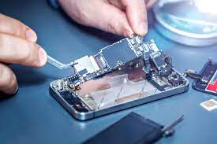

REPAIR
SMITH
By autoNation
PUZARA MOBILE SOLUTION
.
PRO:- Abhisekh Kumar
Phone Number:-9523214501
.jpeg) Address:- Shankar Saraiya Shouth ,Eastchampran ,Bihar
Address:- Shankar Saraiya Shouth ,Eastchampran ,Bihar
SERVICE
Agreement for Repair
1.1 The terms set out in these Conditions of Repair (“Agreement”) shall apply to the service (“Service”) we provide to repair your smartphone, tablet, computer and/or any accessories (“Device”) on the service check-in form.
1.2 Reference to “us”, “we” and “our” refer to Mobile Phone Repair Centre and references to “you” and “your” are references to you (“Customer), the person addressed on this form.
All repairs (unless otherwise stated)
2.1 This Agreement shall commence from the date you book a repair and shall continue until we have repaired or otherwise returned your Device, whichever is sooner, and received any payment due from you.
2.2 We shall make reasonable efforts to repair your Device subject to the availability of any parts required and/or the terms of any relevant guarantee or warranty. We shall perform the Service using our utmost care and skill.
2.3 We shall use Genuine, OEM or High Quality compatible parts for the repairs of all Devices.
2.4 We shall require the passcode of your Device in order to test the Device before and after the Service. Should you prefer to keep this information private, we can still proceed with an appointment, but will not be able to perform a full functional check on the Device until you return to the store, which can delay the provision of the Service, if any adjustments need to be made.
2.5 Any time estimate for completion of the service, which may be given to you, is an estimate only and does not form any obligation under the terms of this Agreement. We will aim to return your Device as soon as reasonably possible, however, any Board Level (Level 3) repairs (i.e. repairs to the logic board of the Device) may take at least 5 working days to be completed.
2.6 We shall notify you when the Device has been repaired. If necessary, we shall send a reminder and the device will be recycled if not collected by day 90 to cover our costs.
2.7 If we are unable to complete the Service for any reason, or the Service will incur further costs payable by you beyond that initially estimated by us, we will notify youimmediately via telephone and/or email. If no fault is found on your Device or you do not accept our revised estimate, we will return your Device to you unrepaired and we reserve the right to charge you an inspection fee in accordance with our standard charges.
2.8 The cost of repair will be calculated where possible in accordance with our standard charges as published from time to time.
2.9 We shall be entitled to keep your Device until all charges payablehave been paid. We may also charge an additional fee for storage of your Device.
2.10 Use of our service may void your manufacturer’s warranty. If you would like to avoid this, then please take your Device directly to the manufacturer. Please note, your manufacturer’s warranty will not cover any accidental damage.
2.11 The Mobile Phone Repair Centre may install warranty seals following the repair. Any tampering of the seals will void our warranty.
2.12 Our products and repairs are covered by the warranty terms outlined in the table below:
